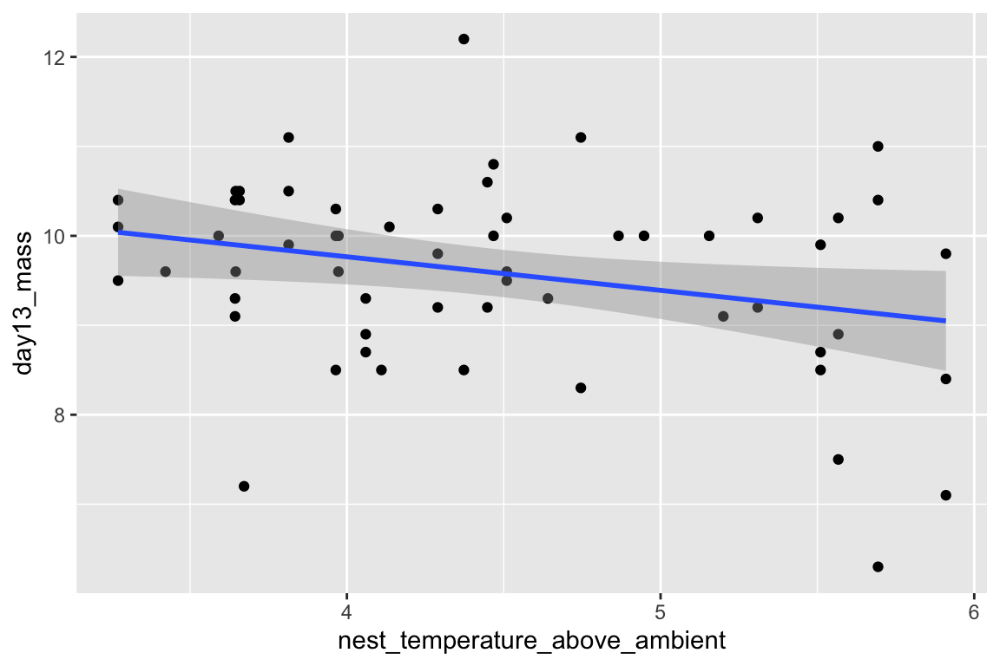
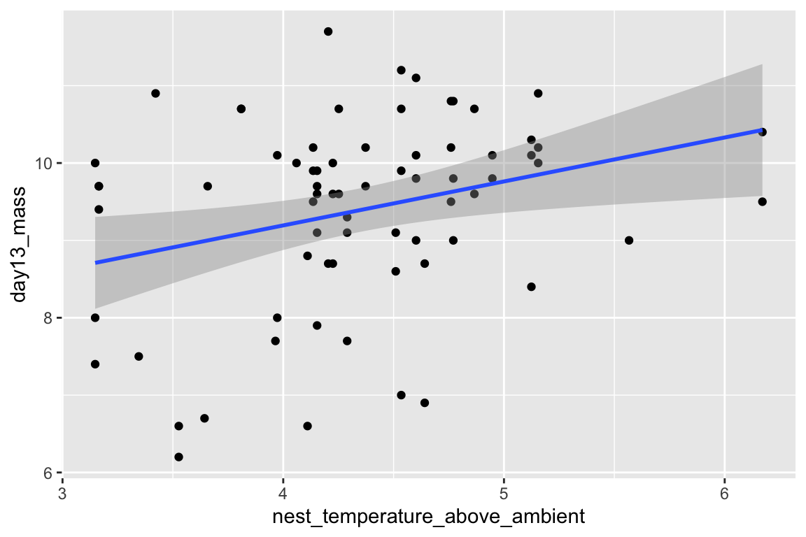

Chapter 3 Data – Reading, Writing, and Fake
3.1 Create new notebook for this chapter
Be sure to save the notebook in the “notebooks” folder of your BIO_413 project. Annotate your notebook with notes! Update it as you learn more! We will use data.table for importing text files in tab-delimited or comma-separated formats and the readxl package for importing excel files.
library(ggplot2)
library(ggpubr)
library(data.table)
library(readxl)
library(emmeans)
library(mvtnorm)
knitr::opts_chunk$set(fig.width=6, fig.height=4) 3.2 Importing Data
Throughout this book, we will download data from the Dryad Digital Repository, which is a major resource for increasing reproducibility in science. My own view is that all data should be archived on some public server (exceptions include data that are proprietary or contain sensitive information – such as human health measures).
The downloaded data will be inserted into the “data” folder. To access these data in an R script, the script needs to know “where to look” or the “address.” This address is the directory path. The default path for an R notebook is the directory containing the notebook .Rmd file. This file should be in the “notebooks” folder within “BIO_413”. The “BIO_413” Folder is the parent of the “notebooks” folder. It is also the parent of the “data” folder. To see any content within the “data” folder, the R script needs to tell R to move back (or up) the directory structure out of the “notebooks” folder into the parent “BIO_413” folder and then forward (or down) into the “data” folder. This is done with
data_path <- "../data"The .. moves the address (of where to read input or write output) back one step and /data moves the address forward into the “data” folder. This folder will eventually contains lots of data from Dryad Digital Repository.
3.2.1 Excel File
The Excel dataset is from an experiment on the growth response of zebra finch chicks to an incubation call that presumably signals “hot environment” to the embryos (Mariette, M.M. and Buchanan, K.L., 2016. Prenatal acoustic communication programs offspring for high posthatching temperatures in a songbird. Science, 353(6301), pp.812-814). The source file is from the Dryad Repository here:
file name: “allDatasetsMarietteBuchanan2016.xls”
source: https://datadryad.org//handle/10255/dryad.122315
Steps
- Copy the title of the Dryad page, which is “Data from: Prenatal acoustic communication programs offspring for high post-hatching temperatures in a songbird”
- Create a new folder within “data” and paste in the copied title as the folder name
- Remove the colon from the name, so the folder name is “Data from Prenatal acoustic communication programs offspring for high post-hatching temperatures in a songbird”
- Download the .xls file into this folder
A .xls file is an old (pre 2007) Microsoft Excel file type. It is a binary file and can only be opened into a readable format with specialized software. The more modern Excel file type is .xlsx, which contains within it multiple xml components. An xml file is a text file, and so contains readable content, but the content is xml code to display something. In general, I am a big advocate of archiving stuff as text files (manuscripts, data, scripts, blog posts) because these will always be readable by future software. Microsoft Excel is not likely to die anytime soon and software that can read .xls and especially .xlsx files (again, .xlsx files are text files) is even less likely to disappear but we can feel even more confident if data are archived as text files. That said, a single microsoft excel file with multiple sheets is an efficient method for distributing data and the readxl package provides excellent tools for reading different sheets of a single .xls or .xlsx file.
The code below uses the function read_excel() from the package readxl. More about the amazing power of this package is the tidyverse page and chapter 11 in the R for Data Science book.
data_folder <- "Data from Prenatal acoustic communication programs offspring for high post-hatching temperatures in a songbird"
filename <- "allDatasetsMarietteBuchanan2016.xls"
file_path <- paste(data_path, data_folder, filename, sep="/")
chick <- data.table(read_excel(file_path, sheet="nestlingMass"))
head(chick) # check -- are there headers? are there the correct number of columns?## chick ID brood ID brood composition sex rank in nest
## 1: N1.10LF3 N1.10m3 mixed F 2
## 2: N1.10noCut3 N1.10m3 mixed M 4
## 3: N1.10RB3 N1.10m3 mixed F 2
## 4: N1.10RF3 N1.10m3 mixed F 5
## 5: N1.12LB3 N1.12m3 mixed F 3
## 6: N1.12LF3 N1.12m3 mixed F 1
## playback treatment nest temperature above ambient
## 1: treat 4.289583
## 2: cont 4.289583
## 3: cont 4.289583
## 4: cont 4.289583
## 5: cont 3.972917
## 6: treat 3.972917
## max daily temp hatch day mean max temp hatch to day2
## 1: 17.4 18.83333
## 2: 19.0 20.53333
## 3: 17.4 18.83333
## 4: 19.0 20.53333
## 5: 29.0 24.63333
## 6: 25.1 24.80000
## mean max temp hatch to day10 mean max temp hatch to day13 hatching mass
## 1: 22.70 23.05714 0.7
## 2: 24.53 23.41429 0.6
## 3: 22.70 23.05714 0.7
## 4: 24.53 23.41429 0.6
## 5: 22.85 22.91429 0.7
## 6: 23.35 23.24286 0.6
## day1 mass day2 mass day10 mass day13 mass
## 1: 1.1000000000000001 1.2 NA 9.8
## 2: 0.80000000000000004 1.1000000000000001 NA 9.1
## 3: 0.90000000000000002 1.3999999999999999 NA 9.3
## 4: 0.5 0.90000000000000002 NA 7.7
## 5: 1 1.3999999999999999 9.4000000000000004 10.1
## 6: 0.90000000000000002 1.3999999999999999 8.0999999999999996 9.6
## day13 tarsus
## 1: 14.11
## 2: 12.90
## 3: 13.60
## 4: 13.06
## 5: 14.08
## 6: 13.46NOTE
If you are getting errors when trying to read a file, it is probably a bug in the construction of the variable file_path, which is a string variable and the value has to be exactly match the directly path to the file you are trying to read. file_path is constructed by pasting together the variables data_path, data_folder, and filename. Type file_path into the console and look at the value. Then check
- Spelling. Humans are very good at understanding misspelled words but the R language (or any computer language) is very literal. “../data” does not equal “./data” or “../ data” or “../data”
- Capitalization. R is case sensitive (some programming languages are not). “../data” does not equal “../Data” or “../DATA”.
- is the file you are trying to read actually in the folder you are trying to read from?
- is the notebook that you are writing in the folder “notebooks”? (the construction of
file_pathassumes that notebook is one folder deep within the project folder.
If the spelling or capitalization of any of these components is wrong, then file_path will be wrong. If there is any difference in any character in the string, then R will return an error. So spelling AND capitalization have to be perfect, not simply close. Humans are very good at understanding misspelled and OdDLy capitalized words but the R language (or any computer language) is very literal.
In this book, we will consistently uses the protocol for storing and retrieving downloaded files. The first three lines in the script above creates the directory path to the file. This path includes
- data_path – the relative path into the folder “data” (relative to the location of the notebook file)
- data_folder – the name of the folder within “data” containing the file
- filename – the name of the file to read
These are all put together into a single path using the function paste(). Read about paste. It will be used repeatedly. The read_excel(file_path, sheet="nestlingMass") reads the nestlingMass sheet only. This function is embedded within the data.table() function and so is converted into a data.table. The data.table is assigned to the object “chick”
The head(chick) script simply displays the first few lines of the data.table. This is one way to check that the data were imported correctly. In this case, it is easy to see that the column names have spaces in them. It can sometimes be hard to work with column names with spaces and so this next line of code changes all spaces to an underscore
setnames(chick, old=colnames(chick), new=gsub(" ", "_", colnames(chick)))Resist the temptation to change the column names in the data file, which reduces reproducibility. Always increase reproducibility!
Just for fun, let’s plot the data and reproduce Fig. 2A and B. We are using the qplot function, which is from the ggplot2 package. Two plots are made and only a subset of the rows are plotted in each (in A, the subset in which playback_treatment==“treat” and, in B, the subset in which playback_treatment==“cont”). This book uses the ggplot2 package extensively.
qplot(x=nest_temperature_above_ambient, y=day13_mass, data=chick[playback_treatment=="treat"]) +
geom_smooth(method="lm")
qplot(x=nest_temperature_above_ambient, y=day13_mass, data=chick[playback_treatment=="cont"]) +
geom_smooth(method="lm")
3.2.2 Text File
The example dataset comes from an experiment on the effect of neonicotinoid pesticides on bumble bee colony growth.
file name: “Whitehorn, O’Connor, Wackers, Goulson (2012) Data from ‘Neonicotinoid pesticide reduces bumblebee colony growth and queen production’.csv.csv”
source: https://datadryad.org//resource/doi:10.5061/dryad.1805c973
Steps
- Copy the title of the Dryad page, which is “Data from: Neonicotinoid pesticide reduces bumblebee colony growth and queen production”
- Create a new folder within “data” and paste in the copied title as the folder name
- Remove the colon from the name, so the folder name is “Data from Neonicotinoid pesticide reduces bumblebee colony growth and queen production”
- Download the .csv file into this folder
A .csv file is a text file that is comma-delimted, which means that the entries of a row are separated by commas. A text file is readable by any text editor software and most other kinds of software. Datasets that are stored as text files are typically saved as either .csv (where the entries of a row are separated by commas) or .txt (where the entries are separated by tabs). The base R way to read a .csv file is using read.csv. The read.table function is more versatile, as the delimiter can be specified. The function fread() from the data.table package is fast, smart, and flexible. It is smart in the sense that it guesses what the delimter is. Unfortunately, because of spaces in the column labels for this file, fread guesses incorrectly (another reason why spaces in column labels should be avoided). To overcome this, the statement below specifies that the file contains a “header” (a line containing column labels)
data_folder <- "Data from Neonicotinoid pesticide reduces bumblebee colony growth and queen production"
filename <- "Whitehorn, O'Connor, Wackers, Goulson (2012) Data from 'Neonicotinoid pesticide reduces bumblebee colony growth and queen production'.csv.csv"
file_path <- paste(data_path, data_folder, filename, sep="/")
bee <- fread(file_path, header=TRUE)
bee[, Treatment:=factor(Treatment, c("Control", "Low", "High"))]
head(bee)## Treatment Nest ID No. workers 0 1 2 3 4 5 6
## 1: Control C1 13 712.95 748.30 800.57 865 966 997 850
## 2: Control C2 14 719.58 750.00 789.25 822 812 846 827
## 3: Control C3 17 704.92 736.31 767.99 837 976 1117 1050
## 4: Control C4 20 726.42 763.31 795.60 813 801 784 NA
## 5: Control C5 28 740.60 785.52 808.42 837 871 906 886
## 6: Control C6 15 727.10 751.90 774.80 807 847 859 827
## 7 8 V13 Workers left Males New queens Total unhatched pupae
## 1: 791 775 NA 2 0 1 NA
## 2: 820 802 NA 6 15 0 20
## 3: 866 808 NA 1 0 9 NA
## 4: NA NA NA 0 0 0 12
## 5: 807 775 NA 3 0 0 NA
## 6: NA NA NA 0 0 0 118
## Queen pupae Empty cells
## 1: NA NA
## 2: 0 120
## 3: NA NA
## 4: 0 72
## 5: NA NA
## 6: 20 132Here, as with the import of the Excel file, the first three lines create the directory path to the file. The treatment column is a factor variable containing three levels (Control, Low, and High). R automatically orders these alphabetically. For plotting and analysis, we might want a different order. For example, we want Control to be first in the order, since this is a natural “reference” level (what everything is compared to). And if we think of “Control” as no treatment, then it makes sense to have “Low” second in order and “Hight” last in order. The line bee[, Treatment:=factor(Treatment, c("Control", "Low", "High"))] re-orders these levels to this more meaningful order.
Again, there are spaces in the column names. Here I’ll leave it to you to change this
Here is a reproduction of Fig 2.
ggbarplot(data=bee, x="Treatment", y="New_queens", add = c("mean_se"))The plot suggests immediately some problems with the plot itself and the associated analysis. First, the y-axis is counts, which means that negative values are impossible. But the standard error bars look like they use standard errors computed from a model that allows infinetly large negative values, and the illustrated standard error bars imply that negative values exist. So these error bars are misleading. Second, it is good practice, especially if sample sizes are modest or small, to “show the data”, which means, show the individual data points and not just a summary of the distribution.
Here are three alternative plots for exploratory purposes. The first simply “shows the data” but still uses the misleading standard error bars. The second uses a box plot. The last plots the means and 95% confidence intervals modeled with a GLM (generalized linear model) to account for the count data (the model used could be improved). Notice that the bar length above the mean is longer than the bar length below the mean (that is the interval is asymmetric about the mean). In order to stay focussed on importing data, I leave explanation of these plots and analysis to later chapters.
ggbarplot(data=bee, x="Treatment", y="New_queens", add = c("mean_se", "point"))
ggboxplot(data=bee, x="Treatment", y="New_queens")
fit.glm <- glm(New_queens ~ Treatment, data=bee, family=poisson())
means.glm <- emmeans(fit.glm, specs="Treatment", type = "response")
gg <- ggplot(data=data.frame(means.glm), aes(x=Treatment, y=rate)) +
geom_col(fill="gray") +
geom_errorbar(aes(x=Treatment, ymin=asymp.LCL, ymax=asymp.UCL), width=0.3) +
ylab("New queens") +
NULL
gg
3.3 Creating Fake Data
3.3.1 Continuous X (fake observational data)
A very simple simulation of a regression model
n <- 25
beta_0 <- 25
beta_1 <- 3.4
sigma <- 2
x <- rnorm(n)
y <- beta_0 + beta_1*x + rnorm(n, sd=sigma)
qplot(x, y)
knitr::kable(coefficients(summary(lm(y ~ x))), digits=2)| Estimate | Std. Error | t value | Pr(>|t|) | |
|---|---|---|---|---|
| (Intercept) | 24.46 | 0.39 | 62.43 | 0 |
| x | 3.05 | 0.37 | 8.25 | 0 |
The coefficient of \(x\) is the “Estimate”. How close is the estimate? Run the simulation several times to look at the variation in the estimate – this will give you a sense of the uncertainty. Increase \(n\) and explore this uncertainty. Increase all the way up to \(n=10^5\). Commenting out the qplot line will make this exploration easier.
3.3.2 Categorical X (fake experimental data)
n <- 5
fake_data <- data.table(Treatment=rep(c("control", "treated"), each=n))
beta_0 <- 10.5 # mean of untreated
beta_1 <- 2.1 # difference in means (treated - untreated)
sigma <- 3 # the error standard deviation
# the Y variable ("Response") is a function of treatment. We use some matrix
# algebra to get this done.
# Turn the Treatment assignment into a model matrix. Take a peak at X!
X <- model.matrix(~ Treatment, fake_data)
# to make the math easier the coefficients are collected into a vector
beta <- c(beta_0, beta_1)
# you will see the formula Y=Xb many times. Here it is coded in R
fake_data[, Response:=X%*%beta + rnorm(n, sd=sigma)]
# plot it with a strip chart (often called a "dot plot")
ggstripchart(data=fake_data, x="Treatment", y="Response", add = c("mean_se"))
# fit using base R linear model function
fit <- lm(Response ~ Treatment, data=fake_data)
# display a pretty table of the coefficients
knitr::kable(coefficients(summary(fit)), digits=3)| Estimate | Std. Error | t value | Pr(>|t|) | |
|---|---|---|---|---|
| (Intercept) | 11.528 | 1.521 | 7.579 | 0.000 |
| Treatmenttreated | 2.100 | 2.151 | 0.976 | 0.358 |
Check that the intercept is close to beta_0 and the coefficient for Treatment is close to beta_1. This coefficient is the different in means between the treatment levels. It is the simulated effect. Again, change \(n\). Good values are \(n=20\) and \(n=100\). Again, comment out the plot line to make exploration more efficient.
3.4 Saving Data
Let’s save the fake data to the “Fake_Data” folder. In the “output” folder create a new folder named “week 01”. Then set the path to the output folder:
output_path <- "../output" # out to parent directory than down into Fake_dataThis could be done at the beginning of the notebook, especially if many output files are saved. Regardless, now complete the file_path with the specifics of this save.
data_folder <- "week 01"
filename <- "my_first_fake_data.txt"
file_path <- paste(output_path, data_folder, filename, sep="/")
write.table(fake_data, file_path, sep="\t", quote=FALSE)We used write.table() to create a tab-delimited text file using sep="\t" to specify tabs to separate the row elements. “” is the standard character string for a tab. Check in your Fake_Data folder and open the file in a text editor.
3.5 Problems
Download the dataset “data-Lodjak.et.al-2016-FuncEcol.xlsx” from the Dryad repository at https://datadryad.org/resource/doi:10.5061/dryad.rd01s. The .xlsx file presents the data cleanly but the trade-off is that the 1) multiple header rows, and 2) spaces in the header labels, 3) parentheses in the header labels make it more complex to import in a usable way. Import the data and plot Body Mass against Age (that is make Body Mass the “Y” variable and Age the “X” variable) using the qplot function. You should recode the column labels to remove spaces and parentheses using the setnames function.
Download the dataset “Results2015.txt” from the Dryad repository at https://datadryad.org//resource/doi:10.5061/dryad.65vk4. Try to reproduce Fig. 1. It’s not easy. I’ve inserted the figure below.
(grad students only) Download and plot data from a Dryad Repository dataset of your choice.
(grad students only) Create fake experimental data with three treatment levels (control, lo_temp, high_temp). This will require three parameters: an intercept (beta_0), an effect of lo_temp (beta_1), and an effect of high_temp (beta_2). You should be able to plug and play from the script above even if you don’t underdstand at this point what any of it is! Plot it as a strip chart, as above.

Fig. 1 from “Dung beetles reduce livestock…”